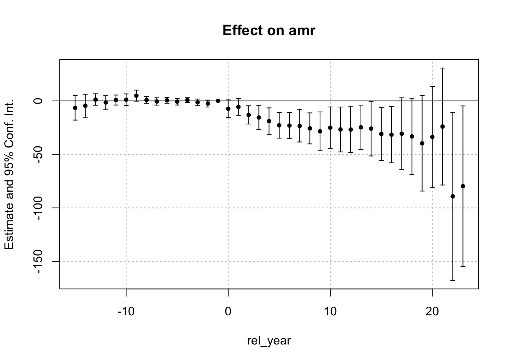
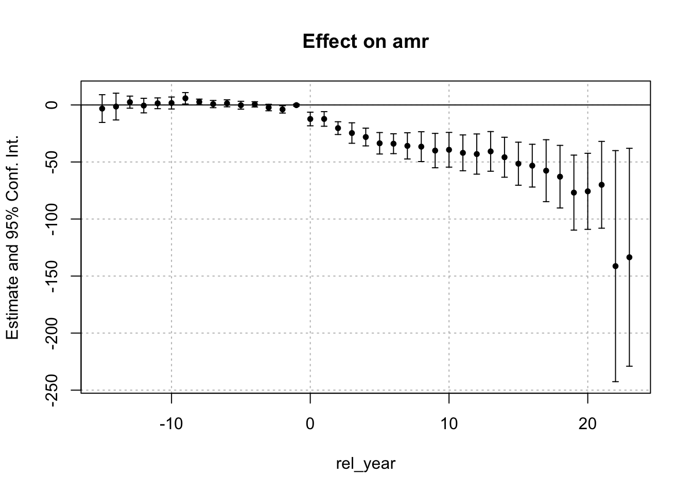
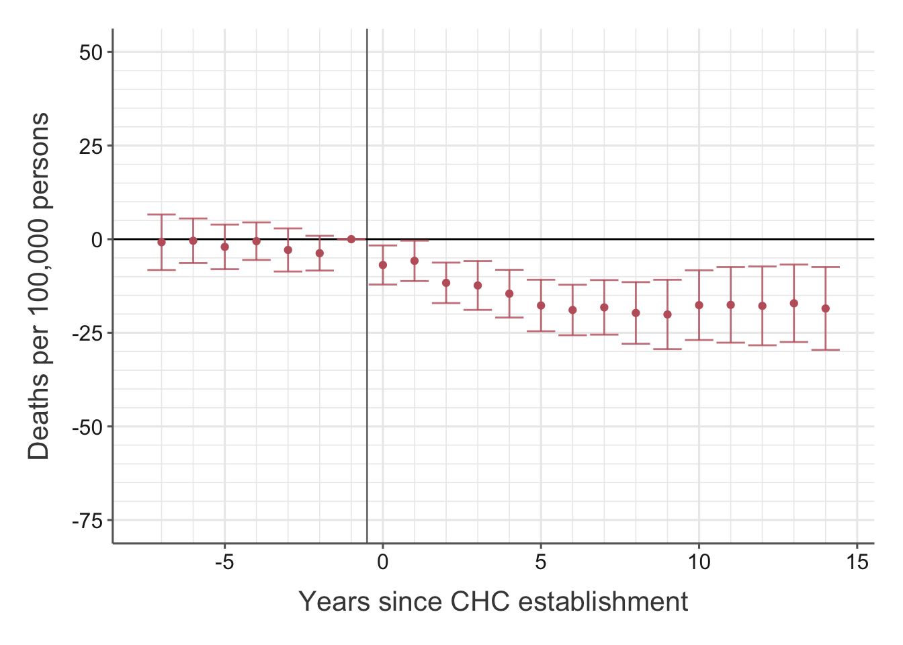
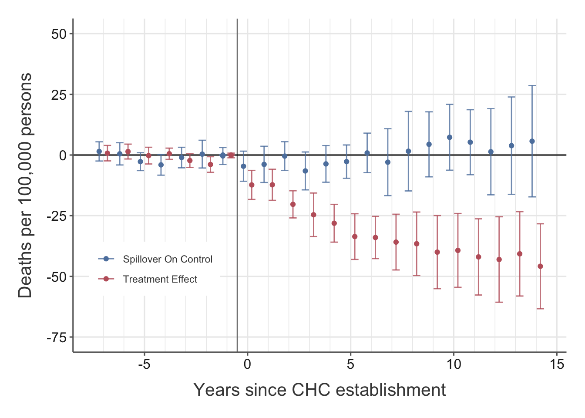

library(tidyverse, warn.conflicts = FALSE)
library(sf)
library(kfbmisc)
library(fixest)
library(did2s, quietly = TRUE)
slides <- TRUE
h_w_ratio <- 9 / 16Bailey and Goodman-Bacon (2015)
Replication of Bailey and Goodman-Bacon (2015) with extension for event study framework including spillover effect controls.
Data Cleaning
df <- haven::read_dta(here::here("data/chc/aer_data.dta")) |>
# Remove LA, New York, Chicago
filter(
!(stfips == 36 & cofips == 61) &
!(stfips == 6 & cofips == 37) &
!(stfips == 17 & cofips == 31)
) |>
# Create urban dummy
group_by(fips) |>
mutate(
`_urb` = sum(`_60pcturban` * (year == 1960), na.rm = TRUE)
) |>
ungroup() |>
# cut every 25% with indicator from 0
mutate(
Durb = Hmisc::cut2(`_urb`, cuts = c(0, 1, 24.999, 49.999, 74.999, 110))
) |>
replace_na(list(chc_year_exp = 0))
ctr_pop <- read_sf(here::here("data/2010_centpop/")) |>
mutate(fips = as.numeric(paste0(STATEFP, COUNTYFP))) |>
select(fips) |>
arrange(fips) |>
st_transform(st_crs(2163))
df <- df |>
filter(fips != 12025) |>
left_join(ctr_pop, by = "fips") |>
st_as_sf()Create Spillover variables
## helper function: for each year, calculate within
within_x_treat <- function(dist, year, chc_year_exp, geometry) {
y <- min(year)
# Last term is because Bailey and Goodman-Bacon define it for chc's before 1974
treated <- (chc_year_exp <= y) & (chc_year_exp > 0) & (chc_year_exp <= 1974)
dist_mat <- st_distance(geometry, geometry) |>
units::set_units("mi") |>
units::drop_units()
within <- (dist_mat > 0) & (dist_mat < dist)
return(as.numeric((within %*% treated) > 0))
}## helper function: find minimum year that within == 1, requires sorted!
min_year <- function(year, within) {
if (any(within == 1)) {
idx <- which(within == 1)[1]
y <- year[idx]
} else {
y <- 0
}
return(y)
}df_spill <- df |>
group_by(year) |>
filter(year <= 1988) |>
# Create within indicator
mutate(
# CHC is included if added up to 1974
# Definition from Bailey and Goodman-Bacon
chc_open = if_else(chc_year_exp <= 1974, chc_year_exp, 0),
# Create D_it
treat = as.numeric((chc_year_exp <= year) & (chc_year_exp != 0)),
# Create S_it
within_25 = within_x_treat(25, year, chc_year_exp, geometry),
# S_it (1 - D_it)
within_25 = within_25 * (1 - treat)
) |>
ungroup() |>
# Arrange panel by fips year
arrange(fips, year) |>
group_by(fips) |>
mutate(
# Create D_it^k's
rel_year = case_when(
chc_year_exp == 0 ~ -1,
chc_year_exp >= 1975 ~ -1,
TRUE ~ year - chc_year_exp
),
# Minimum year where S_it = 1
year_within_25 = min_year(year, within_25),
# Create S_it^k
spill_rel_year = case_when(
year_within_25 == 0 ~ -Inf,
treat == 1 ~ -Inf,
TRUE ~ year - year_within_25
),
# max(D_it, S_it)
treat_or_spill = treat + within_25,
# Create trend variables for controls
Durb_trend = as.factor(paste(year, Durb, sep = "_")),
Durb_trend = as.factor(as.numeric(Durb_trend)),
stfips_trend = as.factor(paste(year, stfips, sep = "_")),
stfips_trend = as.factor(as.numeric(stfips_trend)),
) |>
ungroup()Replicate Event Study
es_pts <- df |>
filter(year <= 1988) |>
st_drop_geometry() |>
fixest::feols(
amr ~ i(exp1, ref = -1) + D_tot_act_md_t + D_60pctnonwhit_t + D_60pctrurf_t + D_60pcturban_t + D_pct59inclt3k_t + R_tranpcret + R_tranpcpa1 + H_bpc + H_hpc | fips + year + year^Durb + year^stfips,
weights = ~popwt
) |>
broom::tidy() |>
filter(stringr::str_detect(term, "exp1::")) |>
mutate(
time = as.numeric(stringr::str_remove(term, "exp1::"))
) |>
select(time, estimate, std.error) |>
add_row(tibble(time = -1, estimate = 0, std.error = 0)) |>
mutate(
ub = estimate + 1.96 * std.error,
lb = estimate - 1.96 * std.error
) |>
filter(time <= 14)NOTE: 540 observations removed because of NA values (LHS: 90, RHS: 540, Weights: 90).Modern Event Study
# No spillover control, but modern estimator
es_1 <- df_spill |>
sf::st_drop_geometry() |>
drop_na(D_tot_act_md_t, D_60pctnonwhit_t, D_60pctrurf_t, D_60pcturban_t, D_pct59inclt3k_t, R_tranpcret, R_tranpcpa1, H_bpc, H_hpc, Durb_trend) |>
did2s::did2s(
yname = "amr",
first_stage = ~ D_tot_act_md_t + D_60pctnonwhit_t + D_60pctrurf_t + D_60pcturban_t + D_pct59inclt3k_t + R_tranpcret + R_tranpcpa1 + H_bpc + H_hpc | fips + year + Durb_trend + stfips_trend,
second_stage = ~ i(rel_year, ref = -1),
treatment = "treat",
weights = "popwt",
cluster_var = "stfips"
)Running Two-stage Difference-in-Differences
- first stage formula `~ D_tot_act_md_t + D_60pctnonwhit_t + D_60pctrurf_t + D_60pcturban_t + D_pct59inclt3k_t + R_tranpcret + R_tranpcpa1 + H_bpc + H_hpc | fips + year + Durb_trend + stfips_trend`
- second stage formula `~ i(rel_year, ref = -1)`
- The indicator variable that denotes when treatment is on is `treat`
- Standard errors will be clustered by `stfips`NOTE: The fixed-effects are not regular, they cannot be straightforwardly interpreted.# Preview es result
iplot(es_1)
# Spillover controls
es_2 <- did2s::did2s(
data = df_spill |>
sf::st_drop_geometry() |>
# Filter out NAs
drop_na(D_tot_act_md_t, D_60pctnonwhit_t, D_60pctrurf_t, D_60pcturban_t, D_pct59inclt3k_t, R_tranpcret, R_tranpcpa1, H_bpc, H_hpc, Durb_trend, stfips_trend),
yname = "amr",
first_stage = ~ D_tot_act_md_t + D_60pctnonwhit_t + D_60pctrurf_t + D_60pcturban_t + D_pct59inclt3k_t + R_tranpcret + R_tranpcpa1 + H_bpc + H_hpc | fips + year + Durb_trend + stfips_trend,
second_stage = ~ i(rel_year) + i(spill_rel_year, ref = -Inf),
treatment = "treat_or_spill",
weights = "popwt",
cluster_var = "stfips"
)Running Two-stage Difference-in-Differences
- first stage formula `~ D_tot_act_md_t + D_60pctnonwhit_t + D_60pctrurf_t + D_60pcturban_t + D_pct59inclt3k_t + R_tranpcret + R_tranpcpa1 + H_bpc + H_hpc | fips + year + Durb_trend + stfips_trend`
- second stage formula `~ i(rel_year) + i(spill_rel_year, ref = -Inf)`
- The indicator variable that denotes when treatment is on is `treat_or_spill`
- Standard errors will be clustered by `stfips`NOTE: The fixed-effects are not regular, they cannot be straightforwardly interpreted.iplot(es_2)
es_pts_combined <- broom::tidy(es_2) |>
mutate(
# Split term to variable and relative time
term_split = str_split(term, "::"),
term = unlist(lapply(term_split, \(x) x[1])),
time = unlist(lapply(term_split, \(x) x[2])),
time = as.numeric(time),
# Confidence interval
ub = estimate + 1.96 * std.error,
lb = estimate - 1.96 * std.error,
# Term for plotting
group = case_when(
term == "rel_year" ~ "Treatment Effect",
term == "spill_rel_year" ~ "Spillover On Control",
)
) |>
# Filter years to match original
filter(time <= 14 & time >= -7) |>
# Shift for plotting
mutate(time = if_else(term == "rel_year", time + 0.2, time - 0.2))
# Add -1 for plotting
es_pts_combined <- bind_rows(
es_pts_combined,
tibble(time = c(-1.2, -0.8), estimate = c(0, 0), ub = c(0, 0), lb = c(0, 0), group = c("Spillover On Control", "Treatment Effect"))
)Export figures
# treatment effect original
(es_plot_original <- ggplot(es_pts) +
geom_vline(xintercept = -0.5, color = "grey50") +
geom_hline(yintercept = 0, color = "black") +
geom_point(aes(x = time, y = estimate), color = "#bf616a") +
geom_errorbar(aes(x = time, ymin = lb, ymax = ub), color = "#bf616a", alpha = 0.8) +
theme_kyle(base_size = 12) +
theme(title = element_text(size = 12, margin = margin(b = 0, unit = "pt"))) +
scale_x_continuous(minor_breaks = seq(-7, 14, 1)) +
scale_y_continuous(minor_breaks = seq(-75, 50, 5), limits = c(-75, 50)) +
labs(y = "Deaths per 100,000 persons", x = "Years since CHC establishment", color = NULL))
kfbmisc::tikzsave(
here::here("figures/chc/chc-es_original_slides.pdf"),
es_plot_original, width = 8, height = 8 * h_w_ratio
)
kfbmisc::tikzsave(
here::here("figures/chc/chc-es_original.pdf"),
es_plot_original, width = 8, height = 5
)(es_plot_combined <- ggplot(es_pts_combined) +
geom_vline(xintercept = -0.5, color = "grey50") +
geom_hline(yintercept = 0, color = "black") +
geom_point(aes(x = time, y = estimate, color = group)) +
geom_errorbar(aes(x = time, ymin = lb, ymax = ub, color = group), alpha = 0.8) +
kfbmisc::theme_kyle(base_size = 12) +
theme(
legend.position = "inside",
legend.position.inside = c(0.165, 0.25),
legend.spacing.x = unit(0, "pt"),
legend.spacing.y = unit(0, "pt"),
legend.background = element_rect(fill = "white"),
panel.grid.minor.y = element_blank()
) +
scale_shape_manual(values = c(16, 18)) +
scale_color_manual(values = c("#5e81ac", "#bf616a")) +
scale_x_continuous(minor_breaks = seq(-7, 14, 1)) +
scale_y_continuous(minor_breaks = seq(-75, 45, 50), limits = c(-75, 50)) +
labs(y = "Deaths per 100,000 persons", x = "Years since CHC establishment", color = NULL))
kfbmisc::tikzsave(
here::here("figures/chc/chc-es_combined_slides.pdf"),
es_plot_combined,
width = 8, height = 8 * h_w_ratio
)
kfbmisc::tikzsave(
here::here("figures/chc/chc-es_combined.pdf"),
es_plot_combined,
width = 8, height = 5
)